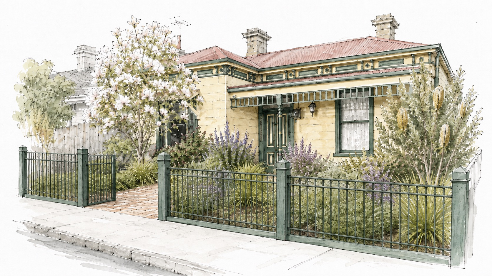
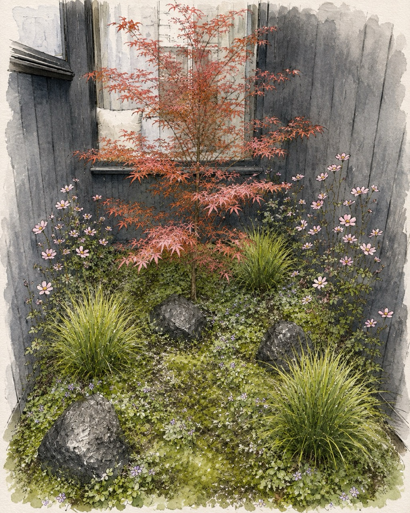
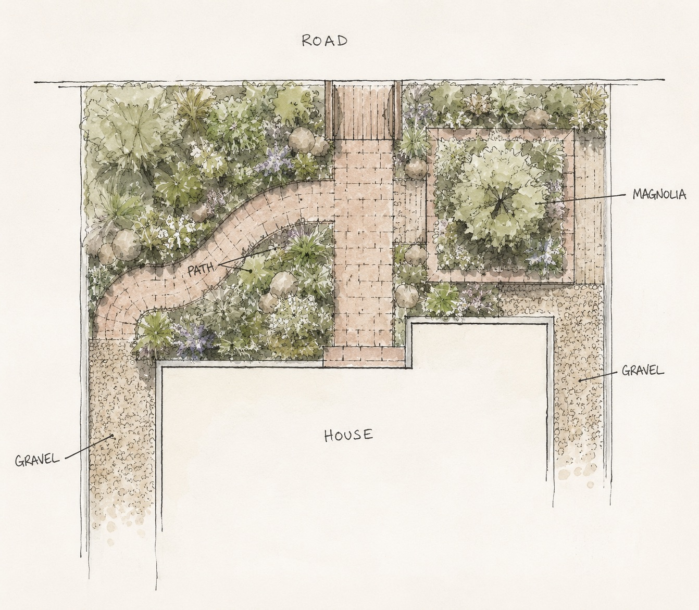
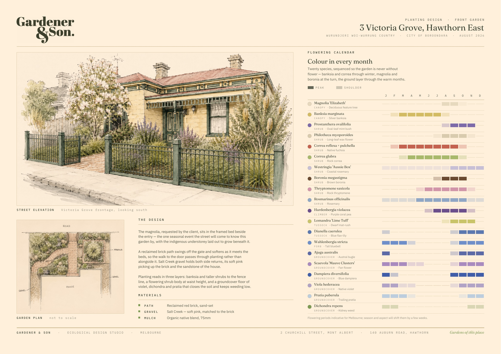
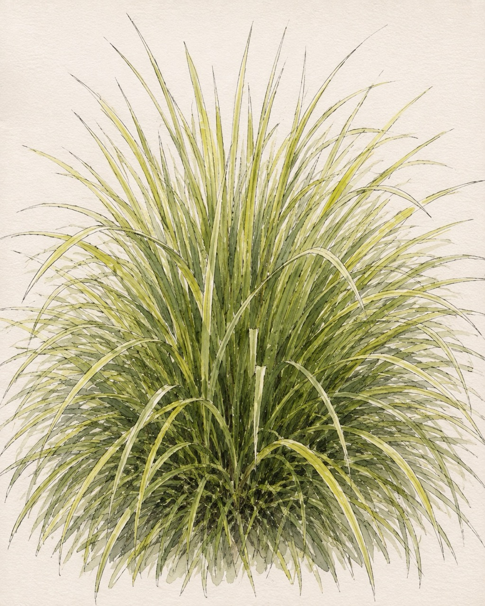
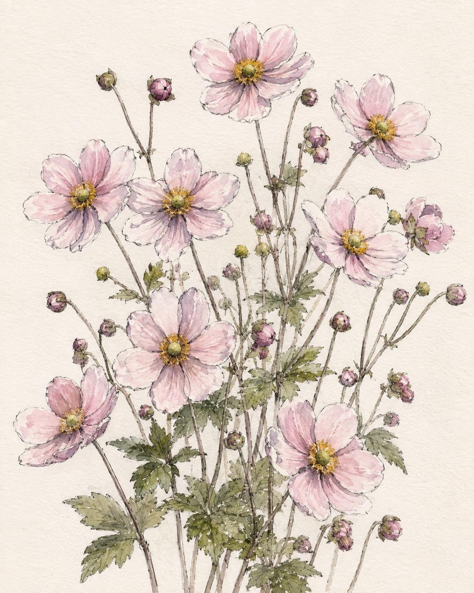
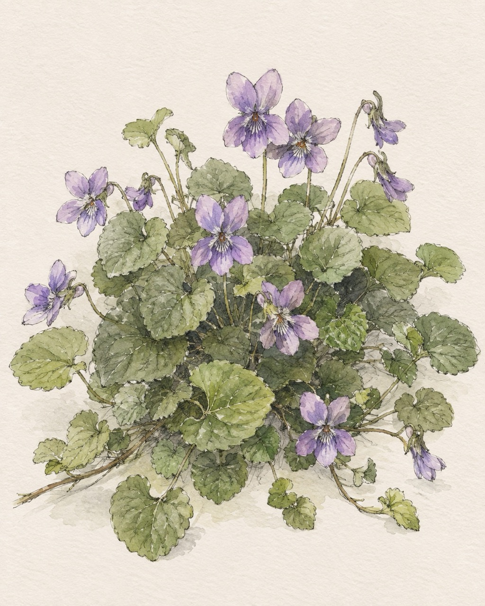
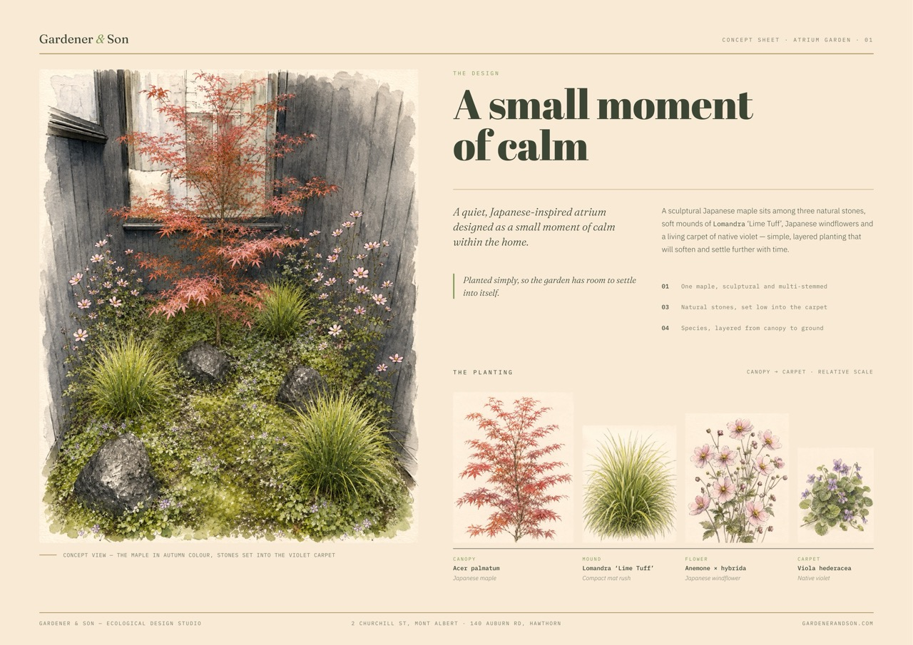

Before you start: open the display window, drop it on the 43", press F in that window for fullscreen. B blanks the screen if you want their eyes back on you.
"Thanks for having us. We've drawn up two gardens today — the front, and the atrium. I'll walk you through both, then we'll talk about anything you'd change."
Set the frame early: this is a design conversation, not a sign-off. Invite interruptions.
We acknowledge the Wurundjeri Woi-wurrung people as the Traditional Owners of the land this garden is made on, and pay respect to Elders past and present. The plants we've chosen for the ground layer and the shrub body are indigenous to this place — they were growing here long before the street was.
Keep this short and sincere — twenty seconds, not a speech.
"Everything in the understorey is indigenous to this pocket of Boroondara. That's not a gimmick — it's why the garden will hold up with less water and less fuss."
This also quietly sets up the magnolia conversation later: one exotic, chosen by them, sitting inside an indigenous garden.

Twenty species in three layers, a reclaimed brick path, and the magnolia you asked for beside the entry.

Four species, three stones and one sculptural maple, held inside the house.
Signpost the shape of the next twenty minutes so nobody's waiting for the atrium while you're still on the front.
"Two very different jobs. The front garden is public — it's how the street reads your house. The atrium is private, and it only has to do one thing: be calm."
Watch for: if they jump straight to the atrium, let them. Press 12 on the strip below.
Calm, abundant and a little wild — becoming richer with each season as the plants grow together and the garden finds its own rhythm.
This line is the thesis of the whole front garden. Say it, then pause.
"We haven't designed the garden as it looks on day one. We've designed it for what it becomes in year three."
It also pre-empts the most common client worry — "it'll look sparse when you leave". Get ahead of it: planting is deliberately generous, so it knits fast.
Let them look before you talk. Five seconds of silence here does more than any sentence.
"This is the view from the footpath, in September."
Point out, in this order: the magnolia at the gate, the banksia and taller shrubs sitting against the fence line, and how the planting comes right up to the iron rail so the fence reads as a frame, not a barrier.
Note the sandstone of the house is picked up in the gravel and brick — the palette came off the building.

A reclaimed brick path swings off the gate and softens as it meets the beds, so you move through the garden rather than alongside it.
Salt Creek gravel holds both side returns — practical access down each side, without the garden feeling over-built.
The magnolia sits in the framed bed beside the entry, with the indigenous understorey laid out to grow beneath it.
Trace the path with your finger on the screen — gate, curve, door. People understand a plan through movement, not through lines.
"You'll never walk in a straight line to your own front door again. That's on purpose."
Practical points to land: both side returns stay usable (bins, hose, access). No edging anywhere — beds meet gravel and brick directly, which is what keeps it feeling like a garden rather than a display.
If they ask about drainage or levels — note it and follow up; don't guess on the spot.
The one seasonal event the street will come to know this garden by — bare structure through winter, then pale yellow flower on bare wood at the turn of spring, before the leaves.
We'll supply and plant it as part of the works.
Credit them plainly. They chose this tree — say so out loud. It makes every other selection feel collaborative rather than imposed.
"This was your call, and it's the right one. It gives the garden a calendar."
Be honest about the trade-off: it's deciduous and it's not indigenous. Winter is bare structure. That's a feature — it lets light onto the understorey when they need it most, and the banksia and correa are carrying flower through those months anyway.
Confirm: the magnolia is not existing — we're planting it.
Banksia and the taller shrubs sit against the fence, giving the garden a back wall and the street a soft edge.
A shrub body you look across rather than over — correa and thryptomene through winter, boronia and westringia at the turn.
Violet, dichondra and pratia knit across the ground — living mulch instead of bare bed, and the layer that does most of the ecological work.
The layered structure is the actual design idea — this slide is the one to slow down on.
"Most front gardens are one layer of shrubs in a bed of mulch. This is three layers, and each one is doing a different job."
Ground floor is the money slide. Closed soil means: less weeding, less water, less mulch top-up, and a garden that behaves like a system rather than a set of individual plants.
Also here: Lomandra ‘Lime Tuff’, Dianella caerulea, Wahlenbergia stricta and Hardenbergia violacea thread between layers — tussocks and a climber.
Don't read the chart. Read the gaps that aren't there.
"Pick any month. Put your finger on it. There's something flowering."
Invite them to actually name a month — birthdays, Christmas, the month they moved in. It's the most interactive moment in the deck and it lands every time.
The winter answer: June–August is where most native gardens go flat. Here it's carried by correa, banksia, thryptomene and rosemary — then boronia's scent arrives right at the end of winter.
Sand-set, laid to a soft curve. Second-hand brick so it reads as though it's always been there.
Soft pink, matched to the brick and to the sandstone of the house. Both side returns.
75mm, held back off the stems. As the ground layer closes over, you'll stop seeing it.
The deliberate omission: no edging. Say it before they ask. Beds meet brick and gravel directly. Edging is what makes a garden look installed rather than grown.
"There's no plastic or steel edge anywhere in this garden. The plants make the edge."
Swatches on screen are indicative — bring the physical samples if you have brick and Salt Creek on hand. Nothing beats them holding it.

This is the sheet they take away — plan, elevation, calendar, materials, all on one page.
"This goes to you as a print. Everything we've just talked through is on it."
Good moment to stop presenting and ask the first open question: "What's sitting oddly with you so far?"
Planted simply, so the garden has room to settle into itself.
Change your pace here. The front garden was abundance; the atrium is restraint. Slow down and drop your voice — it's the easiest way to make the shift felt rather than announced.
"Completely different job. Four species. That's it."
Let it sit. Then talk about it as a view from inside, not a garden you walk in.
"You'll see this through glass, from a metre away, every day. So it has to be right at close range — which is why there's so little in it."
Three things to name: the maple is multi-stemmed and sculptural (we select the individual tree); the stones sit low and into the carpet, not on top of it; the violet grows over and around the stone edges so the whole floor reads as one surface.
Practical: check aspect and reflected heat off the walls, and confirm drainage in the atrium slab. Flag it now if unresolved.



Four plants, four jobs — that's the whole explanation.
"Maple for structure and season. Lomandra for the soft mounds. Windflower for the one moment of flower in autumn. Violet for the floor."
Nice detail worth mentioning: the native violet is the same plant as the front garden's ground floor — one species stitching the two gardens together, inside and out.
Windflower is the one to check with them — it spreads. If they want it tighter, say so and we'll hold it to a drift.

Second take-away sheet.
Second open question here: "Is the atrium as quiet as you wanted, or too quiet?" It's the most likely place they'll want more — and it's a cheap change to make now.
Anything you'd change — plants, path, the atrium. Now is the cheapest moment to move something.
We lock the drawings, the plant schedule and the quantities, and confirm the build cost.
Soil first, then structure, then planting — by hand, by the same two people who drew it.
We stay with the garden through its first seasons while the ground layer closes over.
Adjust step 02 to whatever you're actually quoting. Don't put a number on screen — say it, or send it after.
"Nothing here is fixed yet. Tell us what you want moved."
Ask for the specific next action before you leave: a date for their feedback. Vague enthusiasm is not a decision.
Land it and stop talking. Don't add anything after this line.
"Thank you. What have we missed?"
Then press B to blank the screen — it turns the room back into a conversation.
Drag the display window onto the 43″, then press F inside it. This window stays on your laptop.